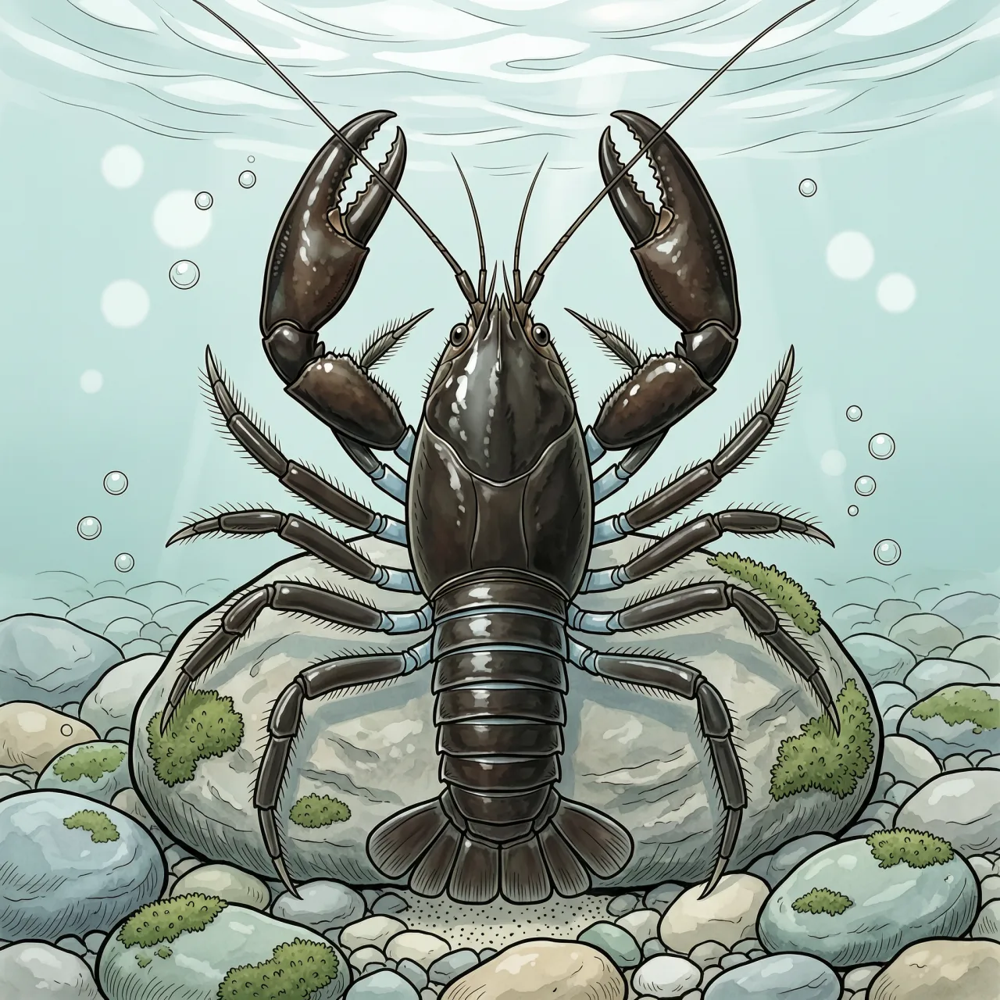
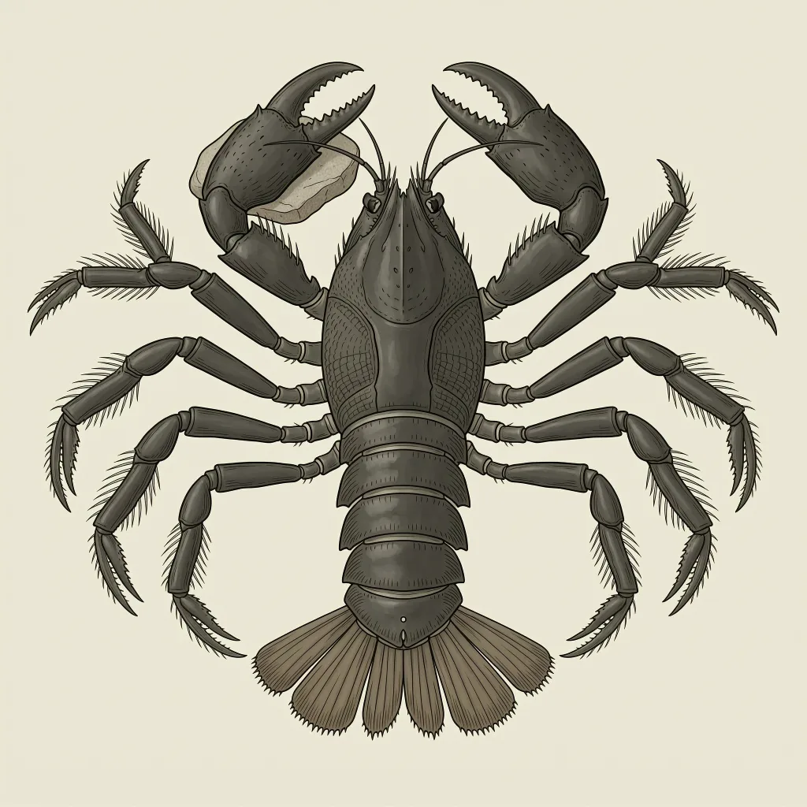

日本本土唯一原产的螯虾，东洋界北缘的淡水种类，栖息在清澈溪流的石头下。它早在1841年就被科学描述，但野外状况至今说不清，IUCN红色名录记为数据缺乏。美国起源的螯虾引入之后，它的生境在被竞争蚕食。
在日本能一眼望到底的浅溪里，翻开一块扁平的石头，背面贴着一只发黑的螯虾——日本黑螯虾最常见的样子就是这样。它是东洋界最北缘的淡水成员之一，按公开说法，也是日本本土唯一原产的螯虾。它住的是水清、有流动的砾石底溪流，石头之间的缝隙刚好容身：躲在石下，既避开了水流，也避开了天敌。
日本黑螯虾的生存，多半押在一块扁平的石头底下：白天贴着石背蛰伏，夜里才出来找吃的。到了开阔处，威胁来自侧面，它没有硬壳可扛，逃法只有一样——尾扇一推，整个身体向后弹出，几下就退回原来的石缝。在没有泥岸可挖、没有别处可藏的溪流里，这记倒退和一处刚好容身的石洞，就是它全部的可依仗之物。
1841年就被描述，到今天也没人能说出它过得好坏——日本黑螯虾的IUCN等级是数据缺乏。作为日本本土唯一原产的螯虾，它一百八十年过去仍然缺乏野外资料；与此同时，美国起源的螯虾进了同一片水域，它的生境在被竞争蚕食。最反常的地方就在这：正因为没人盯着，这份蚕食到底发生了什么、到了什么程度，至今说不清，它也就还挂在数据缺乏这一档。
